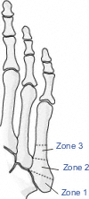

- Descriptive:
Open or closed
Bone involved
Location within bone
Fracture pattern: transverse, spiral, vertical
Comminution
Displacement
Deformity
Articular involvement
Stability
Presence and direction of dislocation/subluxation
-
Proximal fifth metatarsal fractures:
Zone 1: most proximal, involve the metatarsocuboid joint
Zone 2: more distal, involve articulation between 4th and 5th MT
Zone 3: metaphyseal-diaphyseal region, distal to intermetatarsal ligaments (vascular watershed zone, susceptible to
stress fractures)

Proximal 5th MT fracture zones
- Bowers and Martin: turf toe
Grade I: strain at the proximal attachment of the plantar plate at the MT head
Grade II: avulsion of the plantar plate from the MT head
Grade III: impaction injury to the dorsal surface of the MT head ± avulsion or chip fracture
- JAHSS: 1st MTP dislocation, based on integrity of sesamoids
Type I: proximal phalanx displaced dorsally, intersesamoid ligament intact
Type IIA: intersesamoid ligament is ruptured
Type IIB: fracture of one or both sesamoids
Type IIIA: plantar plate avulsed from the proximal phalanx
Type IIIB: plantar plate avulsion with sesamoid fracture
-
OTA: metatarsal (87)
Type A: extraarticular
A1: MT base
A2: diaphyseal, simple
A3: MT head
Type B: partial articular
B1: MT base
B2: diaphyseal wedge
B3: MT head
Type C: complete articular
C1: MT base
C2: diaphyseal comminution
C3: MT head
-
OTA: phalanx (88)
Type A: extraarticular
A1: phalanx base
A2: diaphyseal, simple
A3: phalanx head
Type B: partial articular
B1: phalanx base
B2: diaphyseal wedge
B3: phalanx head
Type C: complete articular
C1: phalanx base
C2: diaphyseal comminution
C3: phalanx head
-
Eponyms:
Dancer's fracture: distal shaft fracture of the 5th MT due to force falling from demi-pointe stance
Jones fracture (zone 2): fractures of the proximal 5th MT at the metaphyseal/diaphyseal junction
- Displaced fractures have a high (67%) incidence of delayed/nonunion
Pseudo-Jones (zone 1): avulsion fracture of the base of the 5th MT
- Due to acute foot inversion with avulsion of the peroneus brevis